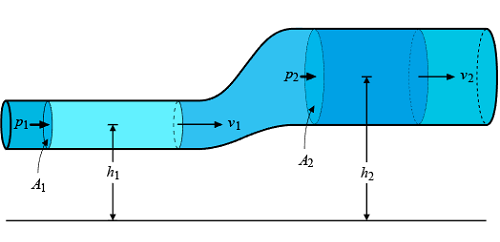
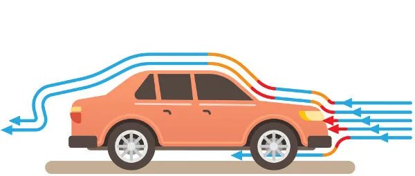
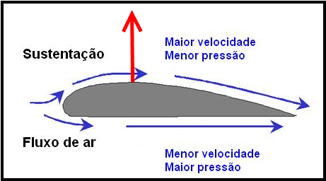
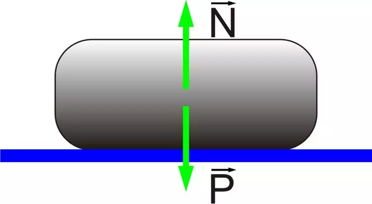
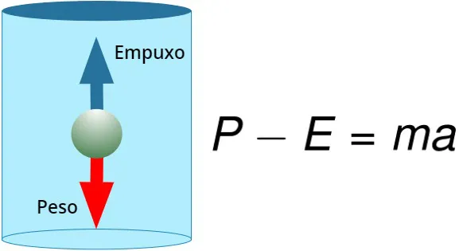
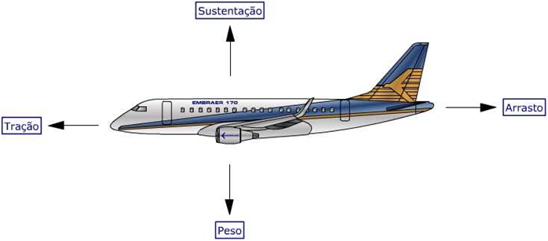
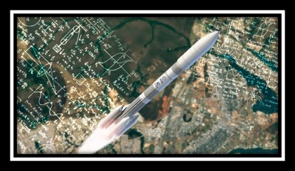
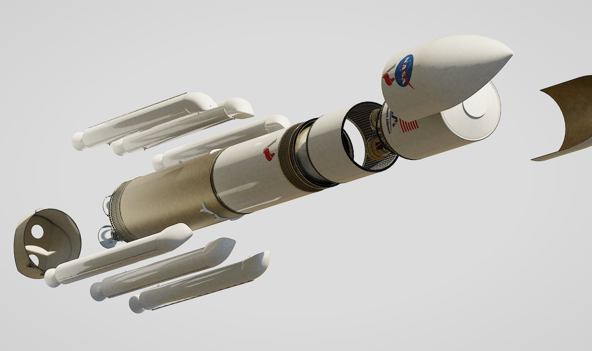
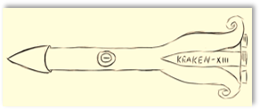
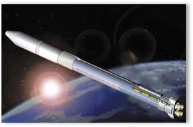

O Princípio de Bernoulli trata da diferença de pressão do ar ao dizer que o aumento da velocidade do fluido é correspondente à diminuição da pressão. Esse princípio explica como um avião pode se sustentar no ar. A sustentação ocorre porque a pressão aérea que age sobre as asas é menor do que a pressão do ar que atua na parte inferior do avião. Desse modo, a força de baixo para cima é capaz de sustentar a aeronave
A força de arrasto é oposta ao sentido do movimento, portanto, quanto maior for a resistência do objeto em relação ao ar, maior será o seu potencial aerodinâmico. Essa força é produzida sobre o objeto, na direção e sentido do escoamento, quando o objeto está se movimentando. Ela varia de acordo com a proporção da velocidade ou da forma do objeto.
A força de sustentação é produzida sobre o objeto na direção transversal ao escoamento. Ela se contrapõe ao peso do objeto em movimento, ou seja, para estabilizar um objeto a força de sustentação deve ser igual ou maior que o seu peso. É a força de sustentação que possibilita a elevação e estabilização do objeto.
O peso é a maior força exercida pelo objeto e sua direção é de encontro com o centro da terra. Ou seja, trata-se de uma força que atua sempre na direção vertical, em consequência da gravidade. Em um voo, o peso do avião é a maior força.
O empuxo ocorre quando uma quantidade de massa é expelida ou acelerada em uma direção e surge uma força na mesma direção, no sentido oposto. O empuxo das aeronaves é provocado pelas hélices ou turbinas, que têm a finalidade de movimentar o avião para frente.
A aerodinâmica possui várias aplicações diferentes. Atualmente, a indústria aeroespacial é capaz de produzir qualquer tipo de aeronave com base nos princípios da aerodinâmica. Eles são fundamentais tanto na construção do design, quanto no projeto de componentes mecânicos. Além disso, esses conhecimentos são utilizados para entender as formas como a circulação atmosférica e a mecânica de voo afetam o ecossistema.
- Melhoria na resistência e redução de turbulência em edifícios altos.
- Desenvolvimento de aeronaves de combate com maior manobrabilidade e menor assinatura radar.
- Redução do arrasto para aumentar a eficiência energética.
O modelo padrão de foguetes se consiste em uma forma cilíndrica, com sua estrutura baseada em sua resistência, tanto para ser capaz de quebrar a resistência do ar quanto para resistir a força aplicada, e aletas em sua extremidade inferior para conseguir manter sua sustentação durante o lançamento
Para garantir que o foguete seja leve e possa atingir a altitude desejada, nos foi proposto que sua altura não ultrapasse 1 metro. É importante considerar o diâmetro do foguete para garantir a estabilidade durante o voo, começando com 10-15 centímetros.
Pretendemos utilizar materiais leves, mas resistentes, como tubos de PVC, fibra de carbono ou materiais compostos. Esses materiais são comumente utilizados na construção de foguetes amadores devido à sua durabilidade.
Utilizaremos dois tanques de alta pressão para acionar a queima de energia, um de oxigênio e outro de hidrogênio. Ambos estarão conectados a dois núcleos: um ficará responsável por armazenar os gases separadamente e o outro será o ponto de encontro entre os mesmos.
O uso do Arduino para controlar os propulsores do foguete estará possivelmente presente na finalização do protótipo. O Arduino é uma plataforma versátil e acessível para programação e controle de dispositivos eletrônicos.
- Uma escolha comum para foguetes devido à sua estabilidade aerodinâmica. Ajuda a minimizar a resistência do ar, permitindo que o foguete alcance altitudes mais altas.
- Localizada na parte superior do foguete. Essa forma permite que o ar flua suavemente ao redor do foguete, reduzindo a resistência e melhorando o desempenho. Também contribuindo para a estabilidade durante o voo.
- Para garantir a estabilidade direcional do foguete durante o voo, incluiremos aletas na parte traseira do foguete. Elas ajudam a mantê-lo em uma trajetória reta e minimizam a possibilidade de rotação indesejada.
O foguete Momo GX possui um formato alongado e cilíndrico, com uma ogiva cônica na parte superior. Ele é projetado para lançar cargas úteis de pequeno porte para altitudes suborbitais. O Momo GX tem uma altura de aproximadamente 10 metros e é impulsionado por motores a propelente líquido.
